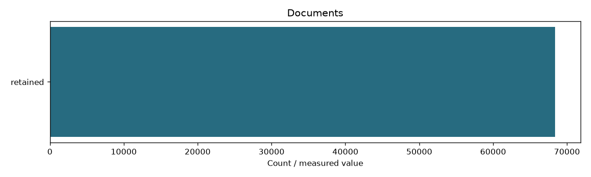

| documents | 68414 |
|---|---|
| all_files_sha256_verified | True |
| manifest_sha256 | 20cc401c26cf7144238dd0d55826ed39741ff58600f13235c2f7d80237dfe02a |
| categories | {'programming-language': 2127, 'framework': 5259, 'containers-orchestration': 2786, 'distributed-data': 6134, 'database-search': 15667, 'cloud': 10123, 'devops-infrastructure': 9430, 'os-networking-web': 6940, 'observability': 3035, 'security': 62, 'ml-infrastructure': 6851} |
| technologies | {'Java': 925, 'Python': 241, 'Go': 28, 'Rust': 300, 'JavaScript': 441, 'TypeScript': 49, 'Kotlin': 143, 'Spring': 110, 'Spring Boot': 1222, 'React': 142, 'Angular': 1321, 'Node.js': 38, 'Django': 2377, 'FastAPI': 49, 'Docker': 470, 'Kubernetes': 1223, 'Helm': 159, 'Podman': 388, 'OpenShift': 1, 'Istio': 217, 'Linkerd': 328, 'Kafka': 3, 'Spark': 2312, 'Hadoop': 2314, 'Hive': 88, 'HBase': 11, 'Cassandra': 49, 'ZooKeeper': 637, 'Pulsar': 162, 'RabbitMQ': 264, 'gRPC': 31, 'Apache Beam': 54, 'PostgreSQL': 2440, 'MySQL': 2280, 'MongoDB': 2366, 'Redis': 2428, 'Elasticsearch': 2440, 'OpenSearch': 2310, 'Neo4j': 796, 'ClickHouse': 607, 'Apache Iceberg': 209, 'AWS': 1461, 'Azure': 2301, 'Google Cloud': 141, 'Oracle Cloud': 2402, 'Cloudflare': 2401, 'DigitalOcean': 1417, 'Git': 988, 'GitHub': 2393, 'GitLab': 966, 'Jenkins': 177, 'Terraform': 601, 'Vault': 365, 'Maven': 1521, 'Gradle': 2419, 'Linux Kernel': 2284, 'Nginx': 46, 'Apache HTTP Server': 456, 'HAProxy': 9, 'Envoy': 2401, 'OpenSSL': 1341, 'RFCs': 403, 'Prometheus': 108, 'Grafana': 2239, 'OpenTelemetry': 259, 'Jaeger': 429, 'OWASP': 1, 'OpenID Connect': 32, 'NIST': 29, 'PyTorch': 1946, 'TensorFlow': 36, 'Hugging Face': 968, 'MLflow': 94, 'Ray': 1135, 'Kubeflow': 474, 'CUDA': 2198} |
| zip_bytes | 2130610566 |
| zip_sha256 | c2aafc3a882fac0eb6dfb26242d7b62fec24a528f05b2b0b8d9eb7b52880c963 |
